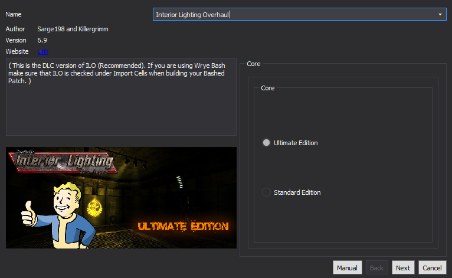

Creating a Separator in Mod Organizer 2
- Right-click in the left pane of MO2 and select Create Separator
- Input Environment + Lighting into the pop-up and select OK
Simple Street Lights
Hide the following:
- SimpleStreetLights (Extra Lights).esp
- SimpleStreetLights.esp
- Makes the street lights in New Vegas functional
Simple Street Lights ESP Replacer
Files to install normally:
- Main File - 2.2. Visuals - Simple Street Lights ESP Replacer
- Fixes ITMs, UDRs, many many wild edits that could have potentially broken the game, and forwards YUPs placement fixes
Old Word Blues Path Lighting
Hide the following:
- OWB-Path Lights - Darker Nights.esp
- Makes the laterns that line the outside of the Think Tank emit light
Lucky 38 E3 Lights Restored
Install normally
- Restores the Lucky 38's lights that were shown at E3 but cut because of console limitations
Burning Campfire Redone
Install normally
- Fires actually light when you activate them
Burning Campfire Redone Fix
Files to install normally:
- Main File - 2.3. Visuals - Burning Campfire Redone Fix
- Fixes a script edit that reverted changes made by the Honest Hearts DLC and fixes the flame effect continually stacking every time you activate it
Enhanced Grass
Files to install normally:
- Main File - Enhanced Grass No VL
Manual FNVEdit editing required:
- Run FNVEdit through MO2
- Right-click in the Module Selection pop-up and click Select None
- Check the box adjacent to EnhancedGrass_NoVL.esp then hold down left shift and click OK
- Wait for the message Background Loader: finished to appear in the right pane
- Input 10633c into the FormID search box in the top left and hit enter
- Right-click in the right pane and select Hide no conflict and empty rows
- In the right pane, right-click on the Vertex Lighting box and select Remove
- Removes the vertex lighting flag from a type of grass that was accidentally left over
- Save and exit

- Makes grass and bushes swing more
Dynamic Pip-Boy Light
Install normally
- Lets you change the range, brightness, color, and activation timing of the pip-boy light
Interior Lighting Overhaul
FOMOD instructions:
 - Modifies all interior cells giving them a realistic look and a more creepy feel
NOTE: May cause small performance hits on weaker machines in large interiors such as Camp McCarran
Fellout
Install normally
- Removes the orange/red tint and makes the nights darker
A Note About Weather/Lighting Mods:
If you do not like Fellout, the three best alternatives are Clarity and Realistic Wasteland Lighting. Clarity is a simple tint remover similar to Fellout but keeps the nights bright, whereas Realistic Wasteland Lighting attempts to mimic the real-life feel of the desert more closely. There is also Yellow Goodbye, which is based off of Clarity with a slightly different look that is closer to vanilla.
Viva New Vegas - NVGE Preset
Install normally
Optional tweaking available:
- Double-click on Viva New Vegas - NVGE Preset in the left pane of MO2
- In the INI-Files tab, click on nvse/plugins/NewVegasReloaded.ini
- Set AmbientOcclusion to 1 (line 161)
- This tweak enables NVGE's Ambient Occlusion (object shadows). The reason this is not enabled in the preset by default is the fact that there is a small bug with it where some objects, mainly grass, are slightly visible through the Pip-Boy. However, the bug is unnoticeable enough for me to keep the AO enabled
- A preset for NVGE designed to make the desert feel warmer and more realistic, including overhauled water
NOTE: If you experience laggy wave effects, restart your PC to clear the caches